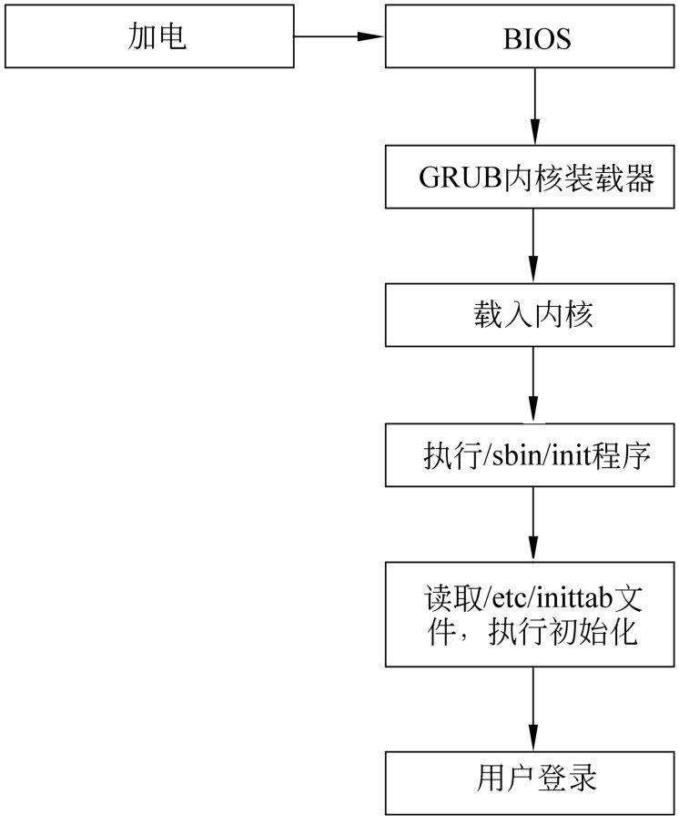
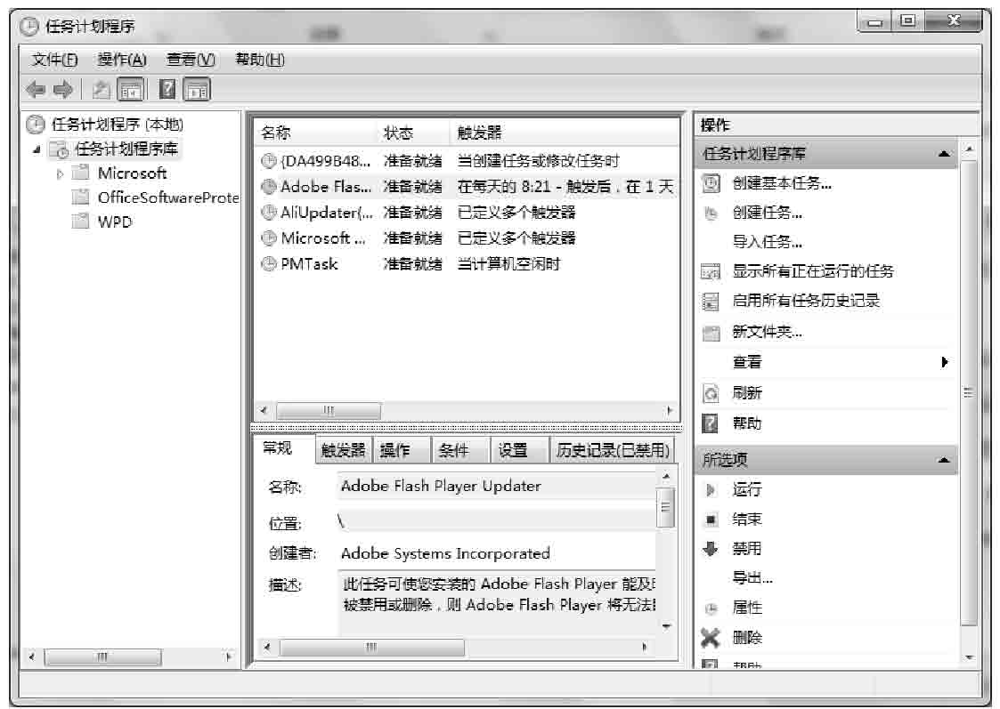
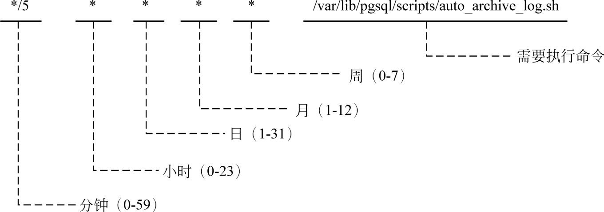

第15章
利用Shell脚本解决实际问题
在前面的章节中，我们详细介绍了Shell编程的各个方面的知识。虽然并非面面俱到，但是应该为读者打下了一个坚实的基础。在本章中，将介绍几个具体的实例，以加深和巩固前面讲过的知识。
本章主要涉及的知识点如下所述。
- 编写系统服务脚本：主要介绍系统的启动、运行级别、服务脚本的基本语法，以及如何编写MySQL服务脚本。
- 通过脚本管理Apache服务器日志：主要介绍Apache及日志文件、如何编写备份文件名生成函数、旧日志搜索函数、日志备份函数、删除旧日志，以及定时运行脚本等。
15.1 编写系统服务脚本
在进行系统管理的时候，一般都需要用到系统服务脚本。通过编写服务脚本，可以使得系统服务的管理更加便利，更加规范。在本节中，将介绍Linux的系统启动过程和初始化过程，并且以MySQL服务脚本为例，来说明系统服务脚本的编写方法。
15.1.1 系统启动过程
从大的方面来讲，Linux系统的启动过程如图15-1所示。当一个Linux系统启动的时候，首先是用户按下电源，接着电脑加电，然后执行BIOS中的固件程序，完成系统硬件的自检。当硬件自检没有发现问题之后，便调用内核装载器来载入系统内核。内核装载器又称为内核装载程序，目前比较流行的是GNU GRUB。GRUB是GRand Unified Bootloader的缩写，它是一个多重操作系统启动管理器，可以用来引导不同系统，例如Windows或者Linux等。
 注意：在不同的硬件系统中，这个过程可能会有所不同，图15-1所描述的是x86硬件平台的过程。
注意：在不同的硬件系统中，这个过程可能会有所不同，图15-1所描述的是x86硬件平台的过程。

图15-1 Linux启动过程
当Linux内核加载完成之后，便执行/sbin/init程序，创建系统中的第一个进程。init进程的进程ID为1，是Linux系统中所有进程的父进程。init进程会读取/etc/inittab、/etc/init/rc.conf以及/etc/init/rcS.conf等文件，执行一系列的初始化操作。然后执行/etc/rc.d目录中相应的子目录中的服务脚本，创建启动或者停止某项服务。
在Linux的启动过程中，有个文件发挥了非常重要的作用，该文件为一个Shell脚本文件，其名称为/etc/rc.d/rc。/etc/rc.d/rc的作用是根据不同的运行级别来启动或者停止服务。无论是对于初学者，还是有一定经验的读者来说，这个文件都是一个极好的范例，有兴趣的读者可以仔细地阅读这个文件的代码。
注意：在Linux中，/etc/rc是/etc/rc.d/rc文件的符号链接。/etc/rc文件是BSD流派的UNIX系统一直沿用的系统初始化文件。
当init进程完成所有的初始化任务之后，便出现登录窗口，此时用户可以登录进系统进行操作了。
15.1.2 运行级别
所谓运行级别，是指UNIX或者Linux等类UNIX操作系统的不同运行模式。在不同的运行级别下，用户可以执行相应的操作，例如运行级别1表示单用户模式，在这种运行级别下，只允许root用户登录，不启动网络服务。运行级别的概念只用于System V流派的UNIX系统以及Linux系统，对于BSD流派的UNIX系统则不使用运行级别的概念。
在通常情况下，运行级别分为7级，分别使用0～6这7个数字来表示。典型的运行级别如下所述。
- 0：停机。
- 1：单用户模式，不启用网络，不启动各种服务，只允许root用户登录进行维护。
- 2：多用户模式，不启用网络，不启动各种服务。
- 3：多用户模式，除图形界面之外，各种网络服务都可以使用。
- 4：用户自定义。
- 5：带图形界面的多用户模式。
- 6：重新启动系统。
在Linux系统中，各个运行级别下面需要启动或者停止的服务的脚本都位于特定的目录中，这些目录都位于/etc目录中，其名称为/etc/rc0.d～/etc/rc6.d，分别对应上面7个运行级别。下面列出的是运行级别3所对应的目录下面的部分脚本文件列表：
从上面的输出可以得知，/etc/rc3.d中的脚本文件实际上是/etc/init.d目录中的相应脚本文件的符号链接。这些符号链接的命名有着特定的规则，如果文件名的首字符为大写字母K，表示将要传递stop参数给脚本，以停止该服务。如果文件名的首字符为S，则表示将要传递start参数给脚本，以启动该服务。首字符后面的数字表示该脚本执行的顺序。例如，在上面的结果中，K01numad表示在运行级别3中，将传递stop参数给/etc/init.d/numad脚本文件，以停止numad服务。S01sysstat表示在运行级别3中，将传递start参数给/etc/init.d/sysstat脚本，以启动sysstat服务。
注意：用户可以通过init命令来切换运行级别。
15.1.3 服务脚本的基本语法
在Linux系统中，服务脚本有固定的语法，通常情况下，服务脚本应该包括处理服务启动、服务停止、服务重新启动，以及查看服务状态的函数。另外，服务脚本还可以接受某些特定的参数，例如start、stop，以及restart等，并且根据这些参数调用不同的函数。
下面给出的是某个Linux系统中的Apache Web服务器的服务脚本，为了节省篇幅，省略了部分无关紧要的代码。
上面给出的代码是一个比较规范的服务脚本。读者可以仔细揣摩上面的代码的整体结构以及每行代码的作用，从而掌握服务脚本的编写方法。
在上面的代码中，第2行使用圆点操作符执行/etc/rc.d/init.d/functions文件，该文件定义了服务脚本所需要的大部分的公共函数。之所以使用圆点操作符，而不是直接执行，是因为这些函数需要在当前服务脚本后面的代码中使用到，故将/etc/rc.d/init.d/functions文件与当前服务脚本在同一个子Shell中执行。
第6～10行将Apache各组件的路径用变量表示出来，然后在后面的代码中通过变量来调用这些组件。这是一个非常好的习惯，因为后面可能有多处代码都用到了这些路径，如果路径发生改变，则只要修改变量的值就可以了，无需修改每处用到路径的代码。
第13行是一个服务脚本退出状态的代码，如果脚本执行成功，则返回0；否则，返回其他值。
第18～51行定义了处理各个操作的函数，当用户指定不同的参数时，程序需要调用这些函数来改变服务的状态。第18～25行定义了启动服务的函数start()，其中第19行输出一行提示信息，第20行启动Apache服务进程，第21行通过系统变量$?获取第19行的命令的执行结果，并且将结果赋给变量RETVAL。第23行在第19行执行成功的情况下，创建/var/lock/subsys/httpd文件，该文件的作用是表示Apache服务器进程已经成功启动。第24行将服务启动的结果返回。
第28～34行定义了停止服务的函数stop()。其中第30行通过killproc命令终止Apache服务进程。如果终止成功，则第30行会删除第23行创建的文件以及进程ID文件。
第36～51定义了重新加载配置文件的函数，其中的语句与前面两个函数大致相同，不再重复介绍。
第54～81行根据用户传递的参数，调用前面定义的函数，从而使得服务进程的状态得以改变。由于分支较多，为了使整个结构清晰，通常情况下，服务脚本都采用case语句，并且通过位置变量$1获取传递的参数值。
第56～58行是用户传递start参数的时候需要执行的代码。此时需要启动服务，所以直接调用start()函数即可。同理，对于下面的stop、status、restart，以及force-reload和reload等参数，也调用相应的函数。
第78～80行处理了其他参数值的情况。也就是说，如果用户传递了除start、stop、restart、condrestart等参数值以外的其他值，则输出一行提示信息，以告诉用户该服务脚本接受哪些参数值。
通过上面的例子，可以大致得出服务脚本的基本语法。即先定义处理各种操作的函数，然后通过case结构来根据用户传递的不同的参数值调用前面定义的函数。其中参数值都是固定的，包括start、stop、restart、status以及reload等。
注意：在15.1.2节中已经讲过，如果/etc/rc0.d～/etc/rc6.d等目录中的脚本的文件名以S开头，则系统在初始化的时候会自动传递start参数该脚本；如果文件名以K开头，则系统将自动传递stop参数给该脚本。
15.1.4 编写MySQL服务脚本
为了使读者更加深入理解服务脚本的编写方法，下面以MySQL服务器为例，来介绍如何从头编写一个服务脚本。通常情况下，服务脚本的行数都比较多，所以下面我们分成几个部分来介绍MySQL服务脚本的编写。
1．定义常量和函数
为了使程序保持一个良好的结构，需要将某些命令的路径使用变量表示出来，同时，将某些相对独立的功能编写成函数。这部分的代码如下：
在上面的代码中，第2行定义了MySQL主程序的路径，如果用户的路径与此不同，可以根据自己的实际情况进行修改。第5行定义了MySQL管理工具mysqladmin的路径，同样，用户可以自行修改以满足自己的需要。第8～16行定义了一个名称为get_mysql_option()的函数，该函数的功能是获取MySQL的各个选项。
第11行是一条比较复杂的语句，首先使用my_print_defaults命令输出MySQL的选项值。my_print_defaults是MySQL自带的一个工具，该工具可以输出MySQL配置文件中的各个选项的值。例如，下面的命令输出my.cnf文件中的mysqld组的选项的值：
在第11行中，my_print_defaults命令的参数通过位置变量$1获取。然后通过管道将输出结果传递给sed命令，sed命令的匹配规则为^--$2=，其中$2为位置变量，表示用户传递的第2个参数值。如果想要获取数据库文件的选项值，则实际匹配规则为^--datadir=。读者可以分析一下上面的my_print_defaults命令的输出结果，就可以理解为什么要使用这样的规则。由于MySQL允许用户在my.cnf配置文件中重复指定某个选项，但是只有最后指定的选项才会生效，所以还需要将sed命令的输出结果传递给tail命令，其中-n 1表示只输出最后一行文本。
第13～15行是处理某个选项在my.cnf配置文件中不存在的情况，此时，get_mysql_option()函数将返回用户指定的第3个参数值。
第18行通过get_mysql_option()函数获取数据库文件的路径，传递给get_mysql_option()函数的参数值分别为mysqld、datadir和/var/lib/mysql。其中mysqld表示在my.cnf文件中，数据库文件的选项位于mysqld这一组中。datadir表示在my.cnf文件中，数据库文件的选项名称为datadir。/var/lib/mysql表示如果在my.cnf文件中没有关于数据库文件的选项，则使用/var/lib/mysql作为数据库文件的路径。
第23、27和31行分别获取Socket文件、日志文件和进程ID文件的路径，其原理与获取数据库文件路径相同，不再重复说明。
2．定义状态处理函数
接下来再介绍服务脚本中的关键部分，即处理各种操作的函数。实际上，服务脚本的状态操作有许多种，但是其实现方法大同小异，所以下面只给出了3个最常用的函数的定义方法，即start()函数、stop()函数和restart()函数。函数定义的具体代码如下：
在上面的代码中，第2～27行定义了start()函数，该函数的功能是启动MySQL服务。第4行判断变量mysql表示的MySQL主程序是否存在并且可以执行，如果不存在或者不可执行，则直接退出。第6行使用mysqladmin命令判断MySQL服务进程是否已经存在。如果服务进程已经存在，返回0；否则，返回非0值。第7行使用系统变量$?获取第6行的返回状态码，如果等于0，则输出一行提示信息；否则，继续执行下面的代码。
第11～14行判断MySQL的系统数据库mysql是否存在，如果不存在，则直接退出程序。
第16行执行MySQL主程序，第20～23行根据第16行的返回状态码执行相应的操作。如果启动成功，则创建状态锁定文件；否则输出启动失败的提示信息。
第29～54行定义了stop()函数，该函数的功能是停止MySQL服务。在本函数中，通过进程ID文件是否存在来判断MySQL进程是否存在。如果存在的话，则在第39行使用mysqladmin命令停止MySQL服务。停止成功之后，则需要删除锁定文件和Socket文件。
第56～59行定义了restart()函数，该函数的功能是重新启动MySQL服务。其代码比较简单，首先调用前面定义的stop()函数停止MySQL服务，然后再调用start()函数启动MySQL服务。
3．接收参数值
最后一部分是整个脚本的流程控制部分，也是脚本的主程序。与上面定义的函数相对应，此处只处理了4个参数的情况，具体代码如下：
在上面的代码中，第4行是用户传入start参数值的情况，此时需要调用start()函数。第8行是用户传入stop参数值的情况，此时需要调用stop()函数。第12行是用户传入status参数值的情况，此时通过pidof函数来判断指定的进程是否存在，如果pidof命令的返回值大于0，表示指定的进程存在；否则，表示指定的进程不存在。第22～24行是处理用户传入restart参数值的情况，此时需要调用restart()函数。
以上整个程序的代码请参见本书所配光盘中的chapter15目录中的mysql文件，具体代码如下：
在上面的代码中，第6行需要特别说明一下。该行的作用是告诉chkconfig命令，当前的服务脚本可以在哪些运行级别下面执行。其中连字符-表示当前脚本适用于所有的运行级别。如果只想在某些运行级别下面执行，则可以直接用数字指定，例如：
表示当前脚本可以在3、4和5这3个运行级别下面运行。后面的2个数字分别表示当前脚本在启动和停止时的优先级。数值越小，优先级越高；反之，优先级越低。
当整个mysql脚本都编写完成之后，将其复制到/etc/init.d目录中，并且赋予可执行权限，命令如下：
接下来使用chkconfig命令更新系统服务，如下所示：
最后，用户就可以使用service命令来启动、停止或者查看运行状态了，代码如下：
注意：为了使系统初始化的时候可以启动MySQL服务，需要使用chkconfig命令将新编写的服务脚本添加到系统服务中。其中chkconfig命令中的服务名与服务脚本文件名称相同。
15.2 通过脚本管理Apache服务器日志
在系统维护的过程中，Apache Web服务器的日志管理也是一件比较麻烦的工作。如果能够通过脚本来自动将旧日志文件归档，然后将其删除，则可以大大减轻系统管理员的工作。本节将介绍如何通过脚本以及任务计划来自动管理Apache日志。
15.2.1 Apache以及日志文件简介
Apache是目前世界上最为流行的Web服务器之一，特别是最热门和访问量大的网站，都几乎无一例外地采用了Apache作为网站的服务器软件。Apache是由美国Apache软件基金会管理的一个开放源码的应用软件，可以在绝大部分的操作系统中运行，包括UNIX、Linux以及Windows等。
对于系统管理员来说，日志是一个非常有用的工具。日志记录了服务器的活动、性能，以及出现的问题，在出现故障的时候，借助日志可以快速地发现原因所在，从而在最短的时间内解决问题。
Apache服务器提供了非常全面而灵活的日志记录功能，主要包括两种日志类型，分别为错误日志和访问日志。
错误日志是最重要的日志文件，其文件名和位置取决于Apache的配置文件httpd.conf中的ErrorLog指令，绝大部分情况下，错误日志的名称为error_log或者error.log位于/var/log/httpd/目录中。Apache服务器将有关诊断和请求处理中出现的错误信息都存到这个错误日志中，所以如果服务器启动或者运行中出现问题，则用户首先应该查看错误日志，以了解具体的原因。
注意：在UNIX或者Linux中，错误日志的名称通常为error_log，而在Windows中，错误日志的名称通常为error.log。
为了便于帮助用户了解故障原因，错误日志中对于每条日志，都有一些描述信息，如下：
从上面的内容可以得知，每一条错误日志通常包括错误发生的日期和时间、严重性、导致错误的IP地址，以及具体的原因。例如，在上面的例子中，错误的原因为文件不存在。在错误日志中，文件使用文件系统绝对路径表示，而非Web服务器中的路径。
访问日志记录了Apache服务器处理的所有的请求，其文件名和位置取决于httpd.conf文件中的CustomLog指令。通常情况下，访问日志位于/var/log/httpd/目录中，其文件名为access_log或者access.og。
访问日志的格式非常灵活，通常情况下包括客户端的IP地址、请求时间和日期、请求的URL，以及状态等，如下：
通过上面的输出结果，可以得知每条访问日志通常包括客户端的IP地址、客户端的身份、客户端的标识、服务器完成请求处理时的时间、客户端请求资源的方法、资源URL、返回状态码，以及资源的大小等。
尽管Apache服务器的日志都由文本组成，但是如果应用的场合是一个访问量非常大的网站的话，则这些日志文件会很快塞满整个文件系统。所以，必须采用适当的手段定期清理这些日志。但是这些日志又是系统管理员进行故障处理的重要依据，所以不可以将其简单地删除，而应定期地将其压缩归档，并且转移到其他存储设备上。下面的内容就是逐步介绍各个步骤的实现方法。
15.2.2 备份归档文件名生成函数
为日志归档文件指定一个有意义的名称非常重要。按照惯例，备份文件的名称一般是以备份的时间命名的。这样做有两个好处，其一是通过文件名就可以知道当前备份创建的时间，其二是文件名不会出现重名的情况。正因为以备份日期命名有着非常大的便利性，所以在本例中专门编写一个函数来生成文件名称。
生成备份归档文件名的函数如下：
在上面的代码中，第2行是函数定义的开头，其中函数名为filename()。第5行通过date命令生成一个时间戳字符串。在该行语句中，使用$()符号执行Shell命令。其中date命令的语法需要特别说明一下：
字符串+%Y%m%d%H%M%S为date命令输出结果的格式说明，其中%Y表示4位数字的年份，%m表示两位数字的月份，%d表示两位数字的日，%H表示24小时制的小时，%M表示两位数字的分钟，%S表示两位数字的秒数。格式字符串前面的加号+是固定的。date与格式字符串之间有一个空格。
注意：在date命令的格式字符串中，字母的大小写有不同的涵义。例如，字符%Y表示完整的4位数字的年份，而%y表示两位数字的年份。通过格式字符串，date命令可以输出各种格式的日期字符串，读者可以参考date命令的手册。
第7行使用echo语句将文件名输出，其中位置变量$1表示用户传入的参数值，该参数值组成文件名的第1部分。文件名的第2部分即第5行生成的字符串。这两部分之间使用圆点操作符连接起来。由于本例的日志归档需要使用tar命令，所以文件名的后缀为.tar。
用户可在Shell程序中使用以下方法获取函数生成的文件名：
生成的文件名的格式如下：
15.2.3 过期日志备份归档函数
在编写完成归档文件名生成函数之后，接下来就要编写一个函数来将旧的日志文件进行归档。归档函数的功能是查找日志目录中前一天生成的日志文件，然后通过tar命令将其归档。为了节省磁盘空间，还可以将归档后的备份档案压缩。归档函数的代码如下：
在上面的代码中，第5行通过前面定义的归档文件名生成函数生成一个文件名。第8行获取用户指定的存放归档日志的路径。如果目标路径不存在，则在第11～13行使用mkdir命令创建。在第12行中，mkdir命令使用了-p选项，其原因为目标路径通常会由多层目录构成，如果路径中的某层目录不存在，则使用-p选项之后，mkdir命令会依次创建各层目录。
第16行通过cd命令将当前工作目录切换到Apache的日志文件所在的目录，便于后面使用tar命令时用相对路径表示要归档的文件。
注意：在默认情况下，tar命令在归档的时候会去掉文件名最前面的根目录符号，从而使档案中的文件使用相对路径表示。这样做的好处非常明显，即在提取文件的时候，被提取的文件会释放到当前的工作目录中，而不会直接释放到绝对路径表示的目录中。这样可以避免无意中覆盖其他的文件。
第19行使用find命令搜索修改时间为1天前的文件，其中选项-mtime表示根据修改时间来搜索文件，+1表示修改时间距当前时间超过1天。-exec表示对搜索到的文件执行后面指定的操作，即使用tar命令归档。
在tar命令中，我们使用了-rf选项，其中-r选项表示将文件追加到已有档案中，-f选项表示后面紧跟的是档案的文件名。在第19行中，档案的文件名由archivedest和archivefile这两个变量连接而成。关于find命令的使用方法，请参考本书第12章。
第22行将归档生成的档案文件进行压缩，其目的是为了节省磁盘空间。
第27行在压缩归档文件成功的前提下，将未压缩的归档文件删除。
15.2.4 过期日志删除函数
当所有的过期日志都已经成功备份之后，就可以将其从磁盘中删除，以释放被占用的磁盘空间。过期日志删除函数比较简单，其代码如下：
其中，起主要作用的是第6行的find语句，将搜索到的文件传递给rm命令。
15.2.5 日志归档主程序
到目前为止，本例中所有使用到的函数都已经编写完成。接下来是编写主程序，调用前面所定义的各个函数。主程序的代码比较简单，如下：
第2行调用archivelog()函数将过期日志备份到/root/chapter15/路径下面，第7行将归档后的过期日志删除。
本例完整的代码如下：
15.2.6 定时运行日志归档脚本
要实现Apache日志的完全自动化管理，必须定时运行上面创建的归档脚本。通常情况下，用户可以使用两种方法来实现脚本的定时运行。一种方法是使用sleep命令，另外一种方法是使用cron工具。下面将分别对这两种方法进行介绍。
sleep命令可以使脚本进程暂时休眠指定的时间间隔，到期之后进程会重新开始执行。要使用sleep命令实现脚本的定义执行，需要将前面的主程序进行修改，将第43～50行放在一个循环结构中，如下：
为了使得归档操作能够不断地重复执行，将archivelog()和removearchivedlog()这两个函数的调用都放在了一个无限循环结构中。第13行使用sleep命令使进程每天执行一次，其中sleep命令以秒为单位。
修改完成之后，用户可以使用以下命令执行归档脚本：
下面重点介绍如何使用cron工具来重复执行某项任务。
1．cron简介
对于系统任务的调度是每个操作系统都必须提供的功能。Windows的任务计划程序如图15-2所示。

图15-2 Windows任务计划程序
通过任务计划，用户可以实现在每天、每周或者每月重复执行某任务，例如系统备份或者发送电子邮件等。
Linux的任务计划管理是通过cron工具实现的。cron这个名字来自古希腊语的chronos，即时间的意思。cron工具主要包括3个组成部分，分别为crontab文件、crontab命令，以及crond守护进程。crontab文件记录了用户的任务计划列表，用户可以通过crontab命令来管理crontab文件中的任务计划列表，crond进程是cron工具的服务进程，该进程会读取crontab文件中的任务计划并且定期执行。
2．crontab文件及其基本语法
crontab文件包含需要提交给crond守护进程的一系列任务计划。每个用户可以拥有自己的crontab文件；整个操作系统也可以拥有一个全局的crontab文件。全局crontab文件只能由系统管理员来管理，其文件名通常为/etc/crontab；而每个用户的crontab文件则可以由每个用户管理，通常位于/var/spool/cron目录中，其文件名为每个用户的登录名。
在crontab文件中，每一行都描述一项任务计划。每一行均遵循特定的语法格式，一般包含6个字段，其中前5个字段描述任务计划执行时间，第6个字段描述任务计划中需要执行的命令，字段之间通过空格或者制表符隔开。
下面给出的是PostgresSQL数据库的服务账户postgres的crontab文件的内容：
图15-3描述了crontab文件中任务计划的各个字段的涵义及其取值范围。

图15-3 crontab文件中任务计划的字段
- 分钟：描述任务计划被执行时的分钟数，其取值范围为0～59，例如取值为0时表示整点执行。
- 小时：描述任务计划被执行时的小时数，其取值范围为0～23，例如取值为0时表示0点执行作业。
- 日：描述任务计划在每个月的哪天执行，其取值范围为1～31，例如取值为1时表示每个月的第1天执行作业。
- 月：描述任务计划在哪个月执行，其取值范围为1～12，例如取值为12时表示每年的12月份执行作业。
- 周：描述任务计划在每周的第几天执行，其取值范围为0～7，其中0和7都表示星期天，其余1～6分别表示星期一至星期六。例如取值为0或者7表示将在每个星期日执行作业。
- 需要执行的命令：通常使用绝对路径表示，当前用户需要拥有执行权限。对于每个时间字段，都遵循以下语法规则：
- 如果需要指定多个值，则使用逗号隔开各个值。例如，用户可以在小时字段中使用0,2,4,6,8,10,12,14,16,18,20,22表示每隔2个小时执行一次任务。还可以在日期字段中使用1,15,31表示每月的第1、15和31天执行作业。
- 如果用户需要为某个字段指定一段连续的值，则可以使用连字符。例如，用户可以在日期字段使用1-7表示每月的第1～7天执行作业。
- 用户可以使用通配符*来匹配所有可能的值。例如，用户在分钟字段使用星号*表示每分钟都执行作业，在小时字段中使用星号*表示每个小时都执行作业。
- 用户可以使用斜线操作符/来跳过某些给定的数值。例如，用户在小时字段中使用*/2表示每隔2个小时执行作业，等价于直接使用0,2,4,6,8,10,12,14,16,18,20,22表示。
注意：与Linux系统中其他的配置文件相同，crontab文件也支持行注释。在每个文本行的开头使用#符号，表示从行首一直到行尾都是注释的内容。
3．显示用户的任务计划列表
用户可以通过crontab -l命令来列出每个用户的任务列表。在默认情况下，crontab命令只列出当前用户的任务清单，如下：
作为系统管理员，root用户可以查看其他所有用户的任务计划列表。此时，需要使用-u选项来指定用户，如下：
crontab-l命令会读取/var/spool/cron目录中的以用户登录名命名的文件的内容，然后将其输出。因此，crontab-l命令的输出结果与直接查看/var/spool/cron目录中的相应文件的内容是一致的。
4．编辑用户的任务计划列表
用户可以使用含有-e选项的crontab命令来编辑某个用户的任务计划列表，其中，用户名需要使用-u选项指定。在默认情况下，crontab命令修改的是当前用户的任务计划列表。
注意：如果无意中输入了无选项的crontab命令，请使用Ctrl+C组合键或者q命令退出编辑器，此时编辑器不会保存修改。如果使用w命令保存了修改，则原有的crontab文件的所有内容都将被清除，变成空文件。这一点在编辑crontab文件时一定要注意。
例如，下面的命令修改root用户的任务计划列表，将前面创建的Apache日志归档脚本添加进去：
当输入以上命令并且按回车键之后，会出现一个全屏的编辑器窗口。通常情况下，该编辑器为vi或者vim，具体需要使用哪个编辑器，用户可以根据自己的需要设定。进入编辑模式后，在文件的末尾追加一行：
以上语句表示每天的0时0分执行一次/root/chapter15/archivelog.sh脚本。输入完成之后，切换到命令模式，输入以下命令保存并退出编辑器：
如果保存成功，Shell会给出以下提示信息：
以上信息告诉用户，已经成功地安装了新的任务计划。
注意：如果对于vi编辑器不熟悉，可以参考本书的2.2节。
添加完成之后，用户可以使用crontab-l命令查看计划列表，如下：
通过上面的输出结果，可以确认Apache日志归档脚本已经成功地添加到了crontab文件中。
15.3 小结
本章以两个具体的例子说明了如何通过Shell编程来解决实际问题。这两个例子非常具有代表性，且非常实用。本章的重点在于使读者掌握根据自己的实际需要，来编写复杂脚本文件的方法。尽管本书介绍的是Shell编程，但是读者不应该仅仅局限于脚本本身。除了脚本之外，还应该了解Linux系统的其他知识，例如系统服务的原理，以及任务计划的管理等。只有全面掌握这些知识，才可以编写出功能完善的Shell程序。
Table of contents
- 内容简介
- 前言
- 目录
- 第1篇 认识Shell编程
-
第2篇 Shell编程基础
- 第3章 变量和引用
- 第4章 条件测试和判断语句
- 第5章 循 环 结 构
- 第6章 函数
- 第7章 数组
- 第8章 正则表达式
- 第9章 基本文本处理
- 第10章 流 编 辑
- 第11章 文本处理利器awk命令
- 第12章 文件的操作
- 第13章 子Shell与进程处理
- 第3篇 Shell编程实战
- 附录CD